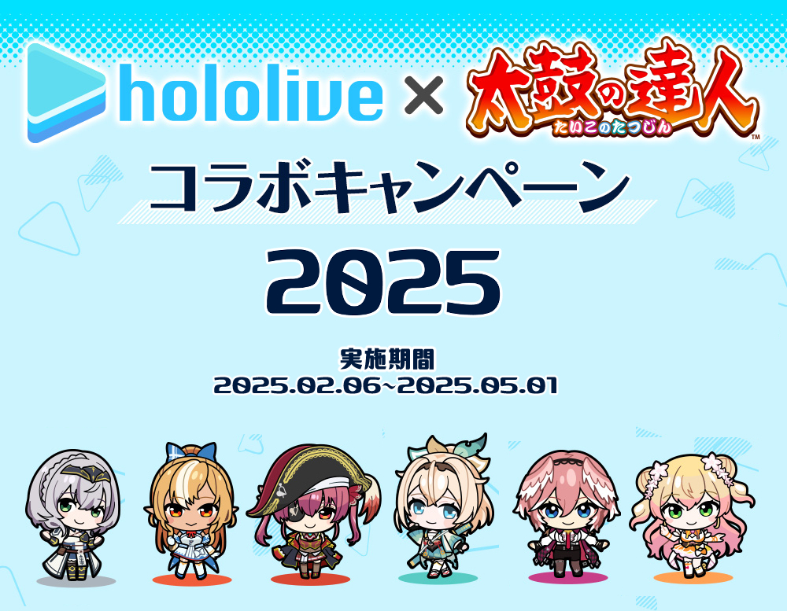
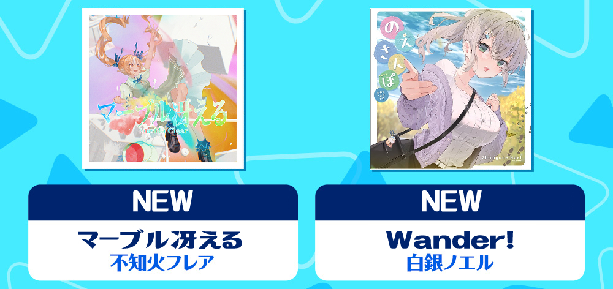
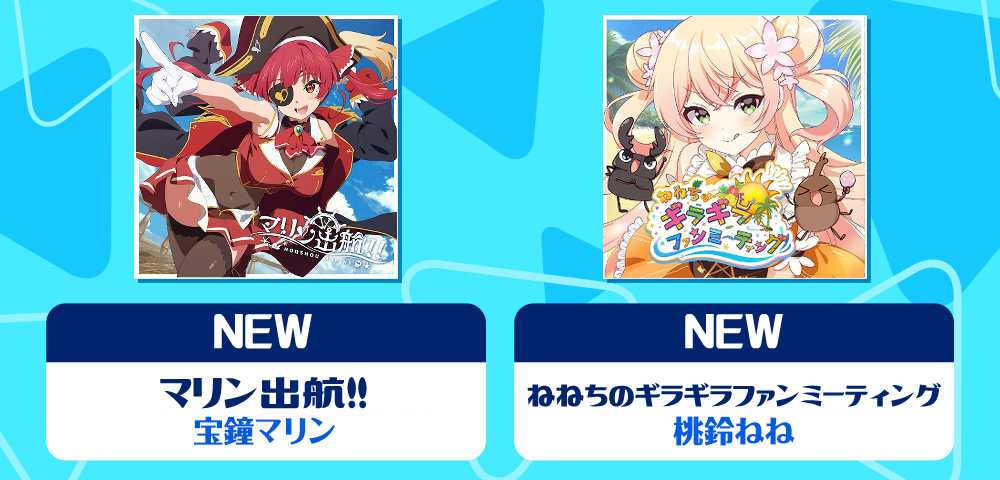
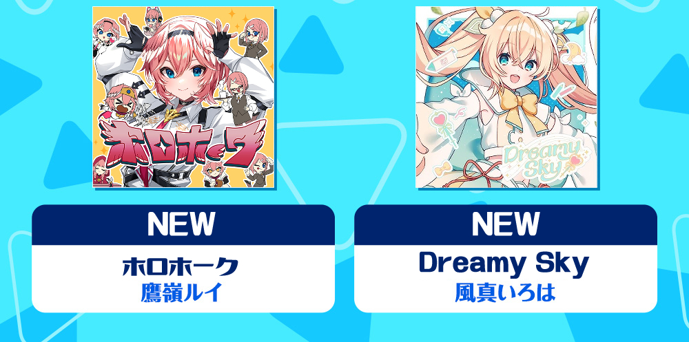
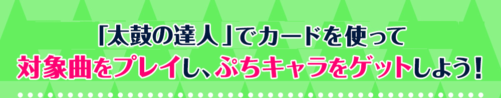
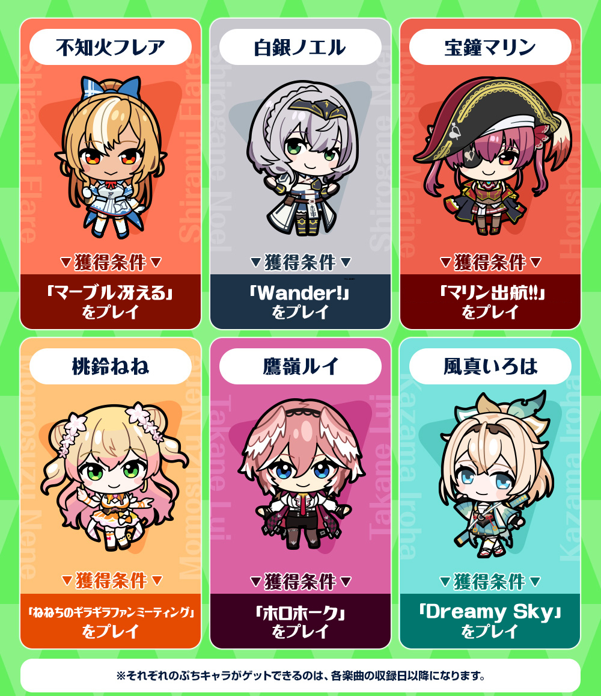
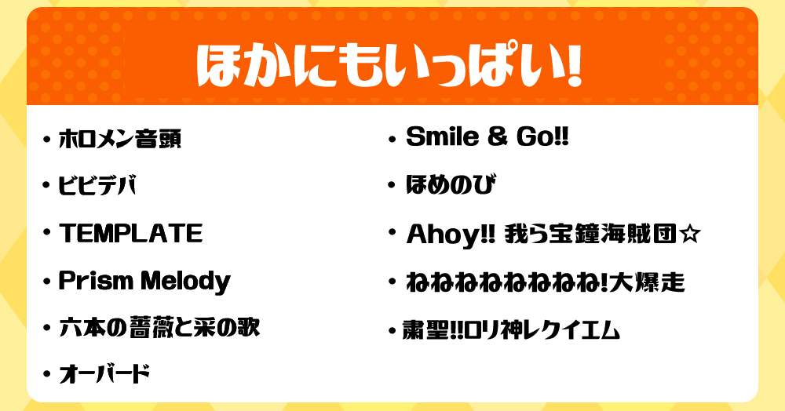

<head>
    <meta charset="UTF-8">
    <meta name="viewport" content="width=device-width, initial-scale=1.0">
    <script>
        function redirectToCountry() {
            const userLanguage = navigator.language
            const userCountry = userLanguage.substring(0, 2);

            switch (userCountry) {
                case "ja":

                    break;
                case "ko":
                    redirectURL = "kr.html";
                    break;
                default:
                    redirectURL = "en.html";
            }
            window.location.href = redirectURL;
        }
    </script>
</head>
<body onload="redirectToCountry()">
</body>
</html>
<html lang="ja" class="js skrollr skrollr-desktop"><head prefix="og: http://ogp.me/ns# fb: http://ogp.me/ns/fb# article: http://ogp.me/ns/article#"><meta http-equiv="Content-Type" content="text/html; charset=UTF-8">
  <meta http-equiv="Content-Security-Policy" content="script-src &#39;self&#39; &#39;unsafe-eval&#39; &#39;unsafe-inline&#39; https://www.googletagmanager.com/ https://product.bandainamco-am.co.jp/ http://bandainamco-am.co.jp/ https://www.google-analytics.com/ https://cdn-au.onetrust.com/ https://www.youtube.com/ https://platform.twitter.com/; style-src &#39;self&#39; &#39;unsafe-inline&#39; https://fonts.googleapis.com/ http://bandainamco-am.co.jp/;">

<meta name="viewport" content="width=device-width,user-scalable=no,maximum-scale=1,initial-scale=1.0">
<title>ホロライブコラボ2025 │ 太鼓の達人 ニジイロ プラス ver.| EXPLUS</title>
<meta name="keywords" content="太鼓の達人ニジイロプラス","Taiko Nijiiro Plus">
<meta name="description" content="太鼓の達人の非公式サイトです。">
<meta property="og:type" content="website">
<meta property="og:title" content="太鼓の達人 ニジイロ プラス ver.">
<meta property="og:site_name" content="太鼓の達人 ニジイロ プラス ver.">
<meta property="og:description" content="太鼓の達人の非公式サイトです。">
<link rel="shortcut icon" href="./jp/nijiiro_plus_icon.ico">
<link rel="apple-touch-icon" href="./jp/nijiiro_plus_icon.ico">
<script async="" src="./jp/event-hololive/gtm.js"></script><script src="./jp/event-hololive/js.cookie.min.js"></script>
  <!--[if lte IE 8]>
<script src="../js/html5shiv.js" type="text/javascript"></script>
<![endif]-->
  <link rel="stylesheet" href="./jp/event-hololive/basic-1.0.css">
  <link rel="stylesheet" href="./jp/event-hololive/special.css">
  <script src="./jp/event-hololive/jquery.min.js"></script>
  <script src="./jp/event-hololive/common.min.js"></script>
  <script src="./jp/event-hololive/respond.js"></script>
  <script src="./jp/event-hololive/jquery.rwdImageMaps.min.js"></script>
<center>
</head>
<body id="special" data-0="background-position:center 0px;" data-100000="background-position:center -50000px;" class="skrollable skrollable-between" style="background-position: center 0px;">
<!-- Google Tag Manager (noscript) -->
<noscript><iframe src="https://www.googletagmanager.com/ns.html?id=GTM-KFKT6GC"
height="0" width="0" style="display:none;visibility:hidden"></iframe></noscript>
<!-- End Google Tag Manager (noscript) -->
  <div id="container" data-0="background-position:center 0px;" data-100000="background-position:center -20000px;" class="skrollable skrollable-between" style="background-position: center 0px;">
    <div id="skrollr-body">
      <header>
        <div id="header-inner">
        
<a href="jp.html"><br></a><div id="mv">
		<style>
img {
display: block;
}
</style>
          
        <div class="hololive_inner" id="hololive_musiclist">








            ※このキャンペーンは非公式です。
			※アジア版はご利用いただけません。
			</div>
			
			<a href="https://discord.gg/66ZXDSEC" target="_blank"><br>
                  <a href="https://taikoplus.github.io/blog/home.html" target="_blank"><br>
				  <a href="https://twitter.com/taikoplus" target="_blank"><br>
				  		  <a href="jp-how.html" target="_blank"><br>
		<a href="jp-dl.html" target="_blank"><br>  </ul>
<p id="ptop"><a href="jp-event-hololive2025.html">PAGE TOP</a></p>
このゲームは非公式専用のゲームです。<br>
This unofficial simulator is unaffiliated with BANDAI NAMCO.<br>
Game System From ©Bandai Namco Entertainment Inc.<br>
Custom Patch From EXPLUS<br>

</a>